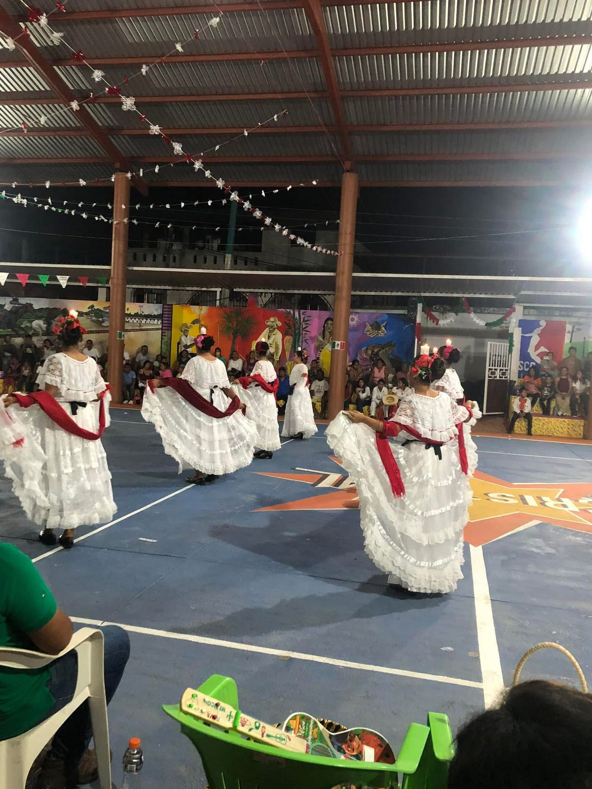
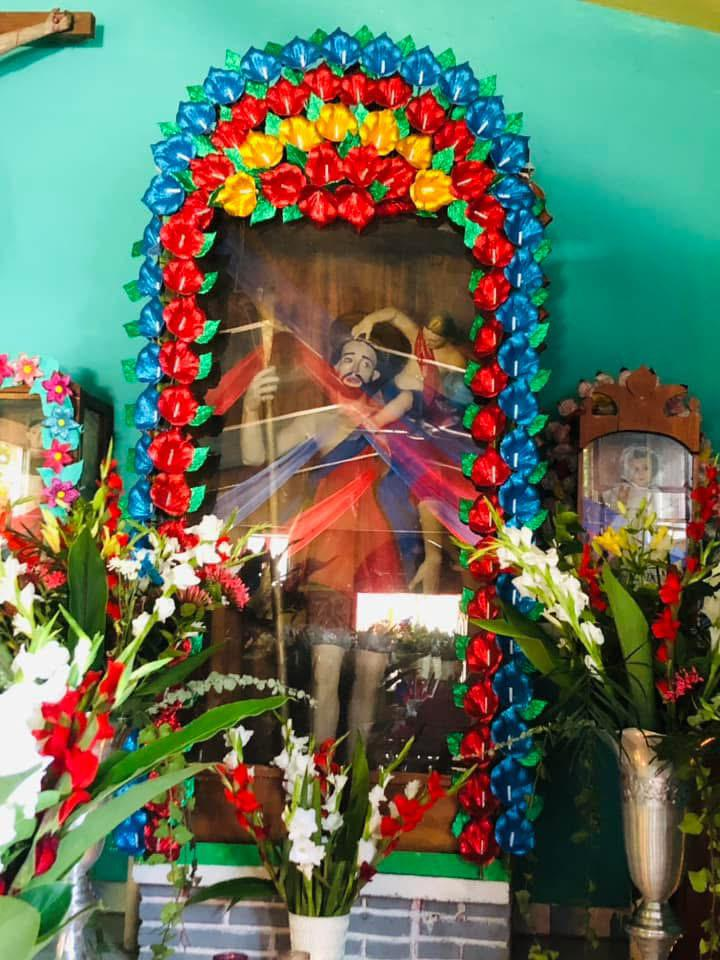
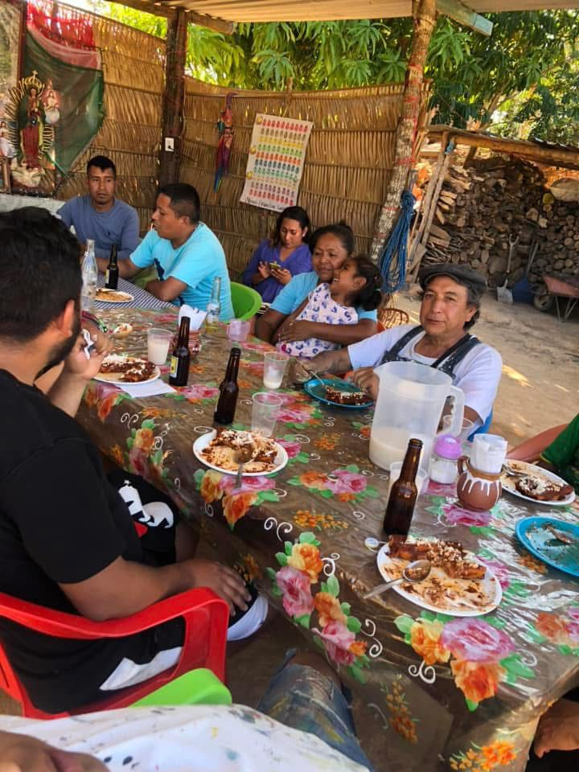
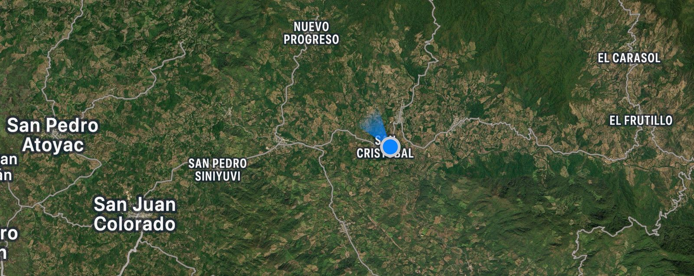

Nombre Oficial
San Cristóbal, es el nombre completo de la localidad.

Significado del Nombre
1. San Cristóbal: En honor a San Cristóbal, un santo cristiano conocido como el patrón de los viajeros.

Gentilicio
Los habitantes de San Cristóbal son llamados Tobeños (as).

Ubicación Geográfica
San Cristóbal se encuentra en el estado de Oaxaca, en la región de la Costa, dentro del Distrito de Jamiltepec. Coordenadas aproximadas: 16°24′N 97°54′O. Colinda con otros municipios de la región mixteca-costeña.

División Territorial
Cabecera municipal: San Cristóbal
Rancherías y localidades cercanas bajo su jurisdicción.
Calles principales, que llevan nombres de personajes históricos o fechas importantes.

Historia y Antecedentes
Su origen se remonta a tiempos prehispánicos, cuando grupos indígenas mixtecos habitaban la zona.
Durante la época colonial, el pueblo adquirió el nombre de San Cristóbal debido a la evangelización.
Forma parte de los municipios que conservan tradiciones indígenas en Oaxaca.
Monumentos y Lugares de Intéres
Iglesia de San Cristóbal, el templo principal. Plaza principal, donde se llevan a cabo eventos y ferias. Paisajes naturales, ya que la región cuenta con montañas, ríos y vegetación propia de la mixteca-costeña.
Cultura y Tradiciones
Fiesta patronal: Se celebra en honor a San Cristóbal, con misas, música y eventos tradicionales.
Danzas y música: Se preservan bailes típicos y música regional mixteca.
Gastronomía: Platillos típicos de la región como caldo de res, frijol.
Economía y Actividades Principales
Agricultura: Cultivo de maíz, frijol y productos de la región.
Ganadería: Cría de animales para consumo local.
Artesanías: Producción de textiles y objetos tradicionales mixtecos.